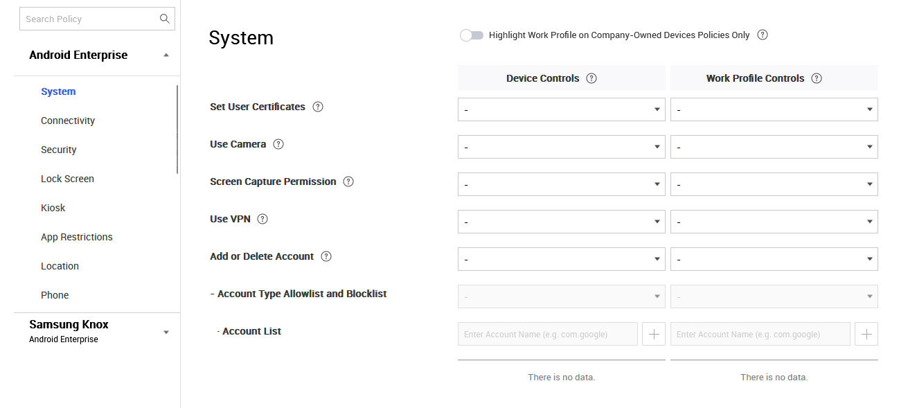

Migrate Android Legacy to Android Enterprise
Last updated January 22nd, 2024
With 23.03, Knox Manage no longer supports the Android Legacy (also known as Device Admin ) platform. The Knox Manage team strongly recommends that you migrate to the Android Enterprise platform
Overview
This guide provides information on how to migrate from Android Legacy device administrator (DA) to Android Enterprise (AE) while using Knox Manage (KM). For devices running Android OS 11 or higher, the Android Legacy activation mode is no longer available for new enrollments in Knox Manage. This guide aims to support IT admins in their transition from Android Legacy (AL) to Android Enterprise (AE) for new and existing enrollments.
This document includes the following information:
- AL to AE migration instructions
- Benefits of migrating to AE
- Tips and recommendations related to preparing devices for migration
Audience
The document is addressed to IT administrators, who use Knox Manage to manage Android Legacy devices, including enrolling new devices with Android OS 11 or higher and migrating devices running Android OS 10 or lower. This guide touches on Android Enterprise concepts, however, we assume the reader has a basic understanding of mobility management on Android devices.
Migration purpose
To better support today’s enterprise requirements, Android is deprecating Device Admin and is replacing it with Device Owner. This change makes it impossible to use Device Admin enrollment for EMM solutions. For Knox Manage those changes are reflected on devices running Android OS 11 or higher. Going forward, IT admins can only use the Android Enterprise activation mode for device enrollment.
Migrate your devices
Before you begin
Before you start migrating your devices, take time to carefully consider the various migration scenarios, their advantages, limitations, and the various possible use cases.
Migration steps
Using Knox Manage, migrate your devices to Android Enterprise as follows:
- Choose the appropriate Android Enterprise device management mode.
- Choose a device migration strategy.
- Review solution deployment scenarios and choose a solution deployment method.
- Configure the Android Enterprise environment in your Knox Manage tenant.
Android Enterprise management modes
In Knox Manage, IT admins have a choice of different management modes for Android Enterprise. Each mode has its advantages and disadvantages depending upon your use cases. Your usage scenario determines the availability of management features and provisioning methods. Below we would like to present short descriptions and some recommendations from our side. For details of the concept, see https://developers.google.com/android/work/overview. For in-depth descriptions of these concepts as they apply to Knox Manage, see Device management modes.
For detailed discussions of these concepts, see Android Enterprise > Overview. For more information Android 11 and how it impacts you, see What’s new in Android 11.
Device migration strategy
In the context of devices that are currently enrolled and activated in Android Legacy, it is important to approach your device migration strategy with care. There are many factors which influence the choices that determine this strategy, such as:
-
Devices’ compatibility with Android Enterprise or possibility for OS upgrades — Android Enterprise enrollment in Knox Manage is supported from Android 6.0. If your devices are running a version Android OS prior to Android 6.0 and there is no way to upgrade them to Android 6.0 or higher, then we recommend replacing your devices. If replacing these devices is not an option, we recommend using these activated Android Legacy devices until the end of their lifecycle. An important point to note here is that for Android Legacy devices, starting with Knox Manage 23.03 in March 2023, we will no longer offer new features, bug fixes, or technical support.
-
Chosen AE management mode — Depending on the type of device activation, there are different actions necessary for each device. If you want to migrate devices from Android Legacy to AE Work Profile, you must re-enroll devices in Knox Manage. However, if you prefer to use the Fully Managed, Fully Managed with Work Profile, or Work Profile on company-owned modes, then you must factory reset your devices, which means that those devices lose all stored data. Both of these options are time consuming and require manual interaction with the device, causing a lot of hassles for the device users and IT admins. Activation of AE is possible only during the use of device set up wizard or during MDM enrollment.
-
Possibility of devices replacement or fleet extension — If you plan to replace your device fleet in the near future and do not want to bother your users with additional device configuration tasks, we recommend keeping your currently enrolled devices as-is until the end of their lifecycle. You can then start migrating new devices to AE. With this option, IT admins may need to manage both AE and Android Legacy in the Knox Manage console, but gradually the device fleet will completely migrate to Android Enterprise.
-
Availability of management policies — While considering different AE device management modes, you must take into consideration the differences between Android Enterprise and Android Legacy policies. It is critical to consider these policy differences when deciding on a device migration strategy for currently enrolled devices. We recommend that you check the policy mapping before you plan your migration. For a detailed mapping of AL and AE policies, see Android Legacy to Android Enterprise Features mapping.
Solution deployment scenarios
Another decision to be made before starting actual migration is to decide how you plan to deploy the new configuration to devices. There are a few methods depending on the Android Enterprise activation mode you have selected. It is up to the IT admin to decide what scenario fits the your needs the best However, regardless of the AE management mode you choose, if you want to migrate currently enrolled Android Legacy devices, you must re-enroll these devices in Knox Manage. You can only activate Android Enterprise during device enrollment.
The following Android Enterprise enrollment options available in Knox Manage:
-
Single or manual enroll process, which includes:
- Token (DPC identifier)
- QR code via Email
- Knox Manage agent app installation from Google Play
For more information, see Enroll a single device.
-
Bulk enrollment using Knox Mobile Enrollment for Samsung’s Android devices. For more information see Use Samsung Knox Mobile Enrollment (KME).
-
Bulk enrollment using Android zero-touch for non-Samsung Android devices. For more information see Use Android zero-touch enrollment (Android devices only).
Depending upon your AE activation mode, there are a few different options available to you. For details, see the following table.
| Android management mode | KM agent installation | Token | QR code | Knox Mobile Enrollment | Zero-touch |
|---|---|---|---|---|---|
| Work Profile | • | ||||
| Fully Managed | • | • | • | • | |
| Corporate owned Single Use | • | • | • | • | |
| Fully Managed with Work Profile | • | • | • | • | |
| Work Profile on Company Owned | • | • | • |
Set up Knox Manage configuration
Knox Manage offers a rich set of features that IT admins can use to manage and optimize their device fleet. This section describes the configuration settings that we recommend that IT admins use to ensure devices are migrated to Android Enterprise seamlessly.
Note that the following instructions are intended to improve the migration process, but are only guidelines and recommendations. Determining the right migration model depends upon your IT needs and specifics of your device fleet.
Get started with Knox Manage
IT administrators must complete the following steps configure Android Enterprise in Knox Manage:
- Activating Android Enterprise in Knox Manage
- Creating AE management profiles in Knox Manage
- Recreating application management structure for Manage Google Play Store
- Triggering proper devices’ re-enrollment
For information on getting started with Knox Manage, see Video: Getting Started with Knox Manage for Android Enterprise.
Configure the Android Enterprise environment
To use Android Enterprise devices, you must register Samsung Knox Manage as the EMM provider in the Google Play console and configure the basic environment of Managed Google Play. See Configure the Android Enterprise environment for detailed instructions.
Additionally, to ensure devices are triggered to enroll to AE, IT admins must change their activation mode. You can find this setting in Knox Manage under User and Organization options.
To change this activation setting:
-
For devices in bulk for a group of users — In Knox Manage, go to the Organization tab > choose the one you want to change > click Modify > change the setting as follows.
-
For changing the settings for a single user — In Knox Manage, go to the Users tab > find appropriate user and click to open the user profile > click Modify > change the setting as follows.
-
For an entire organization — You can set the option Follow Organization type to trigger user enrollment based on the settings for the Organization that the user belongs to. Depending on device deployment method, the devices are enrolled in either Fully Managed or Work Profile on company-owned modes (for set up wizard enrollment), or Work Profile (for manual agent installation) mode. Note that if you want to create a Fully Managed with Work Profile mode on Android 8 to 10 devices, you must set Fully Managed with Work Profile to Yes:
Create AE management profiles in Knox Manage
The next step is to create proper device management profiles for Android Enterprise activations.
While you can use the same profile structure that you are using with Android Legacy, you must create and add a new platform — namely, Android Enterprise — to each profile’s options. To add a new platform, in Knox Manage, go to the Profile tab > find the proper profile and open it > click Modify Profile Info > check Android Enterprise > and then click Save & Set Polices.
While setting up polices you can see the Profile Platform on the left hand side and policies on right hand side. To set up Android Enterprise polices open the appropriate category:

Depending upon your device’s activation mode, the IT admin needs to set up policies as follows:
-
Work Profile mode — Use the Work Profile column settings (the right column).
-
Fully Managed mode, use General Area column settings (the left column).
-
Corporate owned Single Use, use Kiosk category in Android Enterprise Platform Policies.
-
Fully Managed with Work Profile mode — Use the combination of both General Area and Work Profile settings (a combination of the left and right columns simultaneously).
-
Work Profile on Corporate Owned device — Use the combination of both General Area and Work Profile settings, that is a combination of the left and right columns simultaneously. However before you start to set up the company-owned Device Policies as shown here, ensure that you know which policies work for General area in that activation mode.
Recreate the application management structure
When migrating to Android Enterprise as an IT admin, you must remember that currently added applications in Android Legacy are not available in the new mode.
For publicly available applications, the best option to push application installation is to use Managed Google Play Store. Read more about the entire application approval process.
You can also change the currently added applications to AE ones. Doing so only requires a few steps. For applications added to the console from the Google Play Store, you can switch them from Android Legacy mode to Android Enterprise mode as follows:
- Navigate to Application > Click the name of the application.
- Scroll down the page and click Approve.
- On the Approve screen, click OK.
If your company uses internal applications, you must add these applications to a Managed Google Play Private. However, note that to add application to the Managed Google Play Private, first you must remove these applications from the Knox Manage admin portal > internal apps. For more information on this entire process, see Add apps using Managed Google Play.
Managed Google Play Private applications must meet the following conditions:
- The name of the application package must be unique in Google Play (you cannot add applications with the same name that are already in the general Google shop).
- The APK must be optimized to use RAM.
- The key (certificate) used to sign the APK must have a long validity period.
For more information see Best practices for private apps.
Deploying configuration to devices
There are three main Android Enterprise enrollment options in Knox Manage:
-
Work Profile type (private device) recommended activation methods:
- Manual process — The user installs Knox Manage Agent application manually on their private device using private Google account on Google Play Store. After installation in the Knox Manage Agent, the user enters the registration data — that is, user login and password — provided by the IT administrator. For more information, see Enroll as the Work Profile type.
-
Fully Managed type (new device or after a factory reset):
-
Activation token — Manual activation. In the set up wizard configurator of your phone, go to the Google account sign in screen, enter afw#KnoxManage. For more information, see Use a token.
-
QR Code — Manual activation. In the case of the fully managed mode,Knox Manage’s manual enrollment process requires the use of a special QR code, that you can find in the enrollment e-mail sent to the user by your IT admin, the following shows a sample code:

You must scan that code during the set up wizard configuration. For more information, see Use a QR code.
-
Bulk enrollment by Knox Mobile Enrollment — Automatic activation for Samsung’s Android devices. When creating an activation profile as an IT administrator you must create a profile for Android Enterprise.
For more information see Creating MDM profiles for Android Enterprise devices.
-
Bulk enrollment by Android zero-touch — Automatic activation for non-Samsung Android devices. You can use zero-touch enrollment for all devices running Android 9.0 and higher that support zero-touch. For devices with earlier versions of Android, check with the manufacturer of the device whether they are zero-touch compatible. In case of non-compatibility, we recommend you use manual activation to Android Enterprise. For more information see Use zero touch enrollment.
-
Kiosk mode (COSU) type (new device or after a factory reset) — The deployment methods are the same as for the Fully Managed type, but require the use of an appropriate Kiosk profile in Knox Manage. Select one of the following methods.
-
Activation token
-
QR Code
-
Bulk enrollment by Knox Mobile Enrollment
-
Bulk enrollment by Android zero-touch
-
-
Fully Managed with Work Profile type (new device or after a factory reset) — The recording methods are the same as for the Fully Managed type, but require the use of an appropriate profile in Knox Manage. Select one of the following methods.
- Activation token
- QR Code
- Bulk enrollment by Knox Mobile Enrollment
- Bulk enrollment by Android zero-touch
-
Work Profile on Company Owned type (new device or after a factory reset) — Available only on Android 11 devices. Select one of the following methods.
-
QR Code — To activate, use the second code available in the enrollment email sent by IT admin. For example:
-
-
Bulk enrollment by Android zero-touch.
For migrating devices currently registered with Android Legacy, you must check that the device is not added to your Android Legacy profile in Knox Mobile enrollment. If so, remove device from server or change the profile to the Android Enterprise for such devices.
In addition, when you switch to Fully Managed or Fully Managed with Work Profile mode, remember to remove the users private Google account from your devices if user used it while using Android Legacy mode. You must remove the private account from all devices before you enroll devices to Knox Manage.
If you are sure that all the verification activities were carried out, you can proceed to enrollment for your devices. In the case of Fully Managed or Fully Managed with Work Profile, if you have already configured and assigned an Android Enterprise profile in KME (Samsung devices) or ZTE (non-Samsung devices), you must send a factory reset command to the migrated devices. To activate Work Profile, simply send the Unenroll device command.
Once these device commands are pushed to the devices, the enrollment process can start.
On this page
Is this page helpful?